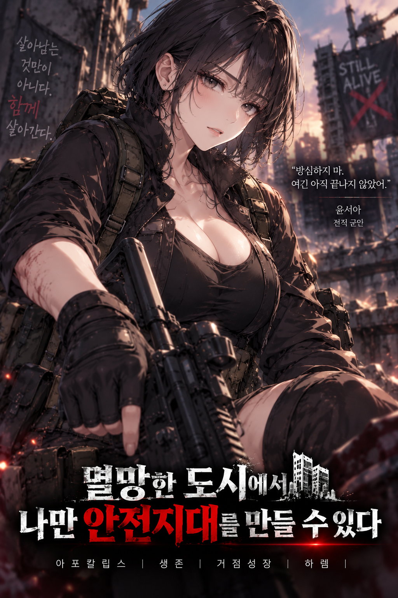
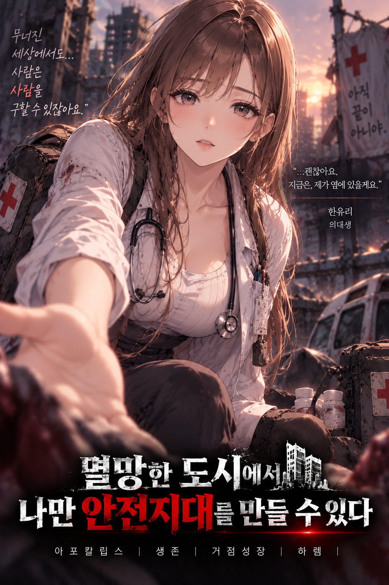
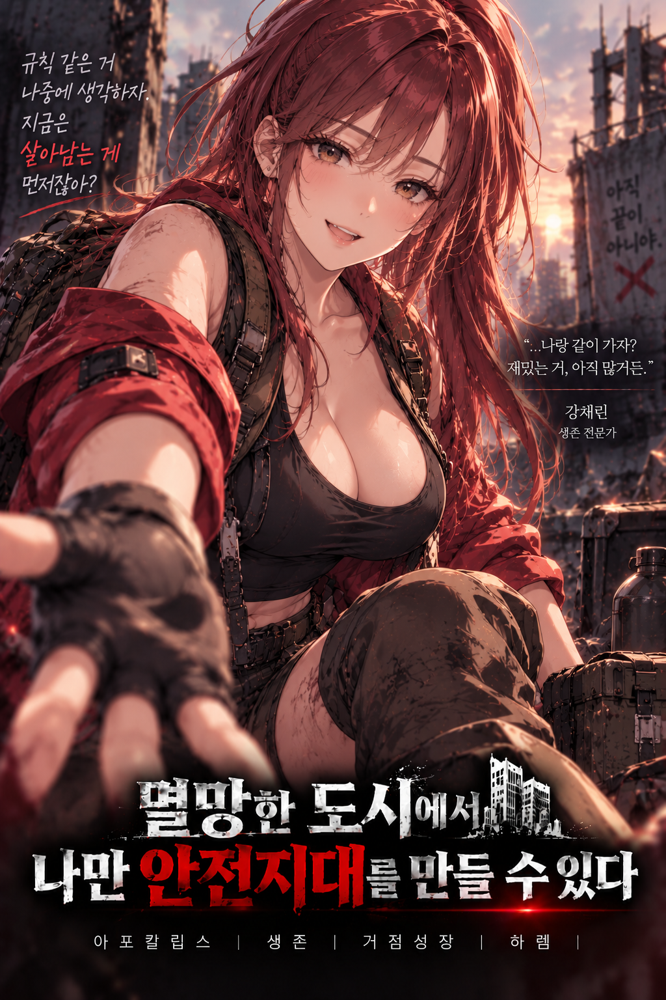
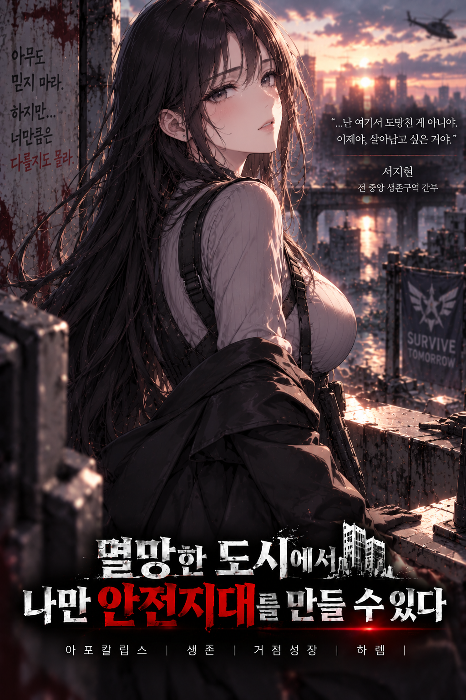
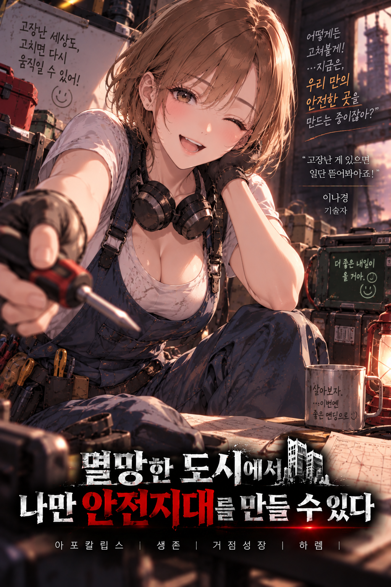

탐색
마트, 병원, 창고, 폐허를 탐색해 식량과 자원, 새로운 장소와 생존자를 발견한다.
재난 발생 3일째. 폐허가 된 도시에서 오직 당신만이 「안전지대」를 만들고 성장시킬 수 있다.
전기와 통신이 끊기고 감염자와 약탈자들이 도시를 뒤덮었다. 식량, 식수, 의약품, 연료까지 모든 것이 한정된 세계.
당신에게 각성한 유일한 능력은 「안전지대」. 작은 편의점에서 시작해 시설을 세우고, 생존자를 받아들이고, 영역을 확장하며 하나의 공동체를 만들어 간다.
마트, 병원, 창고, 폐허를 탐색해 식량과 자원, 새로운 장소와 생존자를 발견한다.
발전기, 의무실, 작업장, 창고, 감시 시설과 방어선을 세워 안전지대를 강화한다.
구조한 생존자들이 역할을 맡고 정착하며, 작은 피난처가 살아 있는 공동체로 변한다.
선택에 따라 다섯 히로인의 신뢰와 호감도가 변화하고 서로 다른 관계와 엔딩으로 이어진다.

짧은 검은 머리와 검은 전술복. 냉정하고 경계심이 강하지만 책임감이 강한 베테랑 전투원.
“방심하지 마. 여긴 아직 끝나지 않았어.”

긴 갈색 머리와 흰 의료복. 따뜻하고 책임감이 강하며 사람을 살리는 일을 포기하지 않는다.
“괜찮아요. 지금은 제가 옆에 있을게요.”

긴 붉은 머리와 빨간 재킷. 대담하고 장난스럽지만 동료를 버리는 선택만큼은 싫어한다.
“규칙 같은 건 나중에 생각하자. 지금은 살아남는 게 먼저잖아?”

매우 긴 검은 머리와 차분한 분위기. 계산적이고 신중하며 쉽게 누구에게도 마음을 열지 않는다.
“아무도 믿지 마라. 하지만… 너만큼은 다를지도 몰라.”

짧은 연갈색 단발과 작업복, 헤드폰과 공구. 밝고 호기심이 많으며 고장 난 건 일단 뜯어본다.
“고장 난 게 있으면 일단 뜯어봐야죠!”